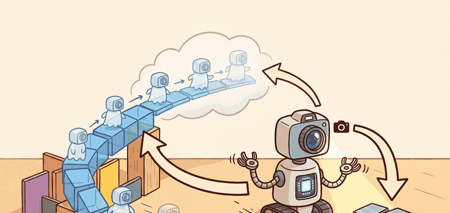

Section 38.2: Autoencoders and recurrent state-space models (RSSM)
"The useful future is the one the controller can still steer."

Figure 38.2A: The opener illustration frames autoencoders and recurrent state-space models (rssm) as a closed-loop problem: a prediction is valuable only if it changes action selection and survives contact with reality.
A World Model With Memory
Big Picture
An RSSM solves a specific problem: the robot needs both memory and uncertainty. A plain autoencoder compresses one frame; an RSSM stitches frames together into a belief state that can be rolled forward under actions and updated when new evidence arrives.
Builder Route
Follow the information flow: observation to encoder, encoder to posterior latent, posterior to recurrent memory, memory to prior, and prior to imagined future. Each hop exists because partial observability forces the agent to remember what the current frame does not show.
Key Insight
The prior predicts what should happen next, the posterior corrects that belief with evidence, and the gap between them is one of the most useful debugging signals in the whole world-model stack, especially when traced in PyTorch or JAX rollouts against MuJoCo replay.
Problem First
A one-frame encoder cannot tell whether a mug is moving behind the robot arm, whether the car is skidding, or whether a human is about to step into the scene. The missing information lives in time. RSSMs were introduced because control from pixels needs a representation that fuses the latest observation with a persistent memory of what probably happened before.
Core Model
An RSSM couples a deterministic memory state $h_t$ with a stochastic latent state $z_t$:
$$h_t = f_\theta(h_{t-1}, z_{t-1}, a_{t-1}), \qquad z_t \sim p_\theta(z_t \mid h_t).$$
After observing the next frame, the posterior refines that prediction:
$$z_t \sim q_\phi(z_t \mid h_t, o_t).$$
The prior says what the dynamics expected before seeing the frame; the posterior says what the model believes after seeing it.
Training usually balances prediction quality with information bottleneck pressure:
$$\mathcal{L} = -\sum_t \mathbb{E}_{q_\phi}[\log p_\theta(o_t, r_t, c_t \mid h_t, z_t)] + \beta \sum_t \mathrm{KL}(q_\phi(z_t \mid h_t, o_t) \Vert p_\theta(z_t \mid h_t)).$$
Reconstruction or reward heads force the latent to stay informative, while the KL term prevents the posterior from inventing arbitrary state that the prior cannot roll forward.
The recurrent structure matters for action. During planning we do not have future observations, so we rely on the prior dynamics. During filtering we do have observations, so we update with the posterior. RSSM is therefore both a forecasting model and a learned Bayesian filter.
RSSM Update Cycle
Predict with the recurrent prior using the last latent and action; correct that prediction with the current observation; decode or score the new latent; then repeat. If the prior and posterior disagree sharply for many steps, the world model is drifting or the encoder is underpowered.
Minimal Probe
The mini-example below mimics an RSSM correction step. A predicted latent state is combined with an observation-derived estimate, and the code prints how much the posterior correction changed the prior belief.
# Mimic one RSSM prediction-correction cycle.
# A large correction means the prior dynamics missed something important.
import numpy as np
prior_mean = np.array([0.45, -0.10, 0.30])
obs_embed = np.array([0.62, -0.06, 0.28])
fusion_gain = 0.35
posterior_mean = prior_mean + fusion_gain * (obs_embed - prior_mean)
correction = np.abs(posterior_mean - prior_mean).sum()
print(
{
"posterior_mean": np.round(posterior_mean, 3).tolist(),
"total_correction": round(float(correction), 3),
}
)
Expected behavior: The posterior should stay close to the prior when dynamics are already accurate, but it should still move enough to absorb new evidence. If the correction is always near zero, the encoder is being ignored. If it is always huge, the recurrent dynamics are not carrying useful memory.
Code Fragment 1: This fragment acts like a one-step posterior update in an RSSM. The total correction is the quantity to watch: it measures how much fresh evidence changed the model's predicted latent state.
Library Shortcut
A handwritten correction step is useful for intuition, but production code usually drops to about 6 lines by using torch.nn.GRUCell for the deterministic memory and torch.distributions heads for the prior and posterior. In practice, teams often pair these with TensorDict, TorchRL, PyTorch logging, Weights & Biases dashboards, and TensorBoard traces, while the official DreamerV3 code handles recurrent unrolling, batch masking, and latent sampling details that are noisy to reproduce by hand.
Practical Recipe
Inspect the prior and posterior separately; never log only the final latent.
Track posterior correction magnitude over time, because rising correction often appears before reward collapse.
Train the representation against reward, continuation, or task heads, not only image reconstruction.
Test whether the latent still works when observations are delayed or partially dropped.
Warning
If posterior corrections stay large for long stretches, the recurrent dynamics are not carrying the information the planner needs. In hardware, that usually appears as brittle behavior after occlusion or delay.
Practical Example
A mobile manipulator sorting packages uses cameras plus wheel odometry. When a box disappears behind the arm, the RSSM prior keeps its likely pose alive for a few steps; when the box reappears, the posterior snaps the belief back to the measured location. Teams often inspect that loop with OpenCV frame overlays plus MuJoCo replay, because without the two-stage update the planner either forgets the box too early or treats every frame as independent evidence.
Research Frontier
A major open direction is representation learning without expensive decoders. Many groups now ask whether reward, value, contrastive, or predictive losses can make the latent more control-relevant than pixel reconstruction alone, especially for contact-rich manipulation and long-horizon autonomy.
Cross-Reference Thread
For the sensor-fusion perspective behind learned filtering, revisit Chapter 8. For sequence models that replace recurrence with token attention, see Section 38.4. For the simulation stacks often used to train RSSM-based policies, connect this section to Chapter 11.
Builder's Deep Dive
RSSMs are powerful because they cleanly separate two jobs. The deterministic core stores what the world model is confident will persist, such as robot pose or object identity across a short occlusion. The stochastic latent captures ambiguity, such as whether a hidden object slipped left or right. That division makes imagined rollouts possible without pretending uncertainty has vanished.
In practice, the failure cases are instructive. If the decoder reconstructs pixels beautifully but the control policy remains brittle, the latent is likely wasting capacity on appearance. If rewards fit but continuation or contact events are poor, the planner may overestimate long-horizon stability. Good RSSM debugging therefore looks less like image inspection and more like belief-state forensics. Useful software anchors here include PyTorch recurrent cells, JAX scan utilities for imagined rollouts, MuJoCo replay traces, and Weights & Biases or TensorBoard panels that log prior and posterior disagreement explicitly.
Self Check
Can you say which part of the RSSM is responsible for memory, which part represents uncertainty, and what an unusually large posterior correction would tell you about the training setup?
Key Takeaway
An RSSM is best understood as a learned filter plus learned dynamics model: it predicts, then corrects, and both steps are necessary for control under partial observability.
Exercise 38.2.1
Design an RSSM logging panel for a robot camera stream. Which prior and posterior statistics would you save every step, and which threshold would trigger a manual replay review?